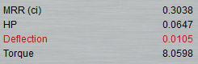
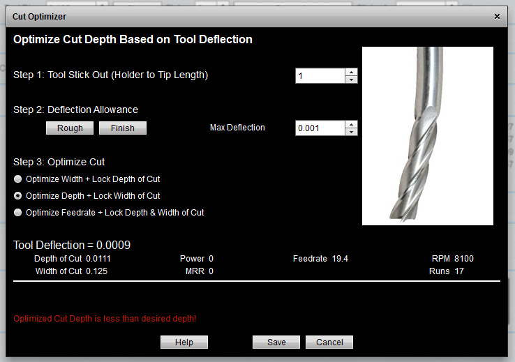

|
|
|
Cut Optimizer: Mastering Deflection

When a tool is cutting, there is side force on the tool that can cause it to deflect and bend. Too much deflection is bad for your tool not to mention it ruins the accuracy of your cut. G-Wizard can calculate how much tool deflection any given cut is expected to have. If there is too much, then it turns the deflection indicator red like this:

Too much deflection shows up in Red!
Any time you seem a value turn red in G-Wizard, you shot stop to figure out why, try to turn off the red, or at least be sure you know why it is red and are prepared to leave it red.
There are a lot of factors that govern tool deflection. To reduce deflection you can reduce cutting forces by taking a less aggressive cut, reduce stickout (the distance from tool holder to the tip of the cutter), or increase the diameter of the tool. All these things will reduce deflection. But what if you can't change them?
Cut Optimizer
G-Wizard incorporates a handy tool called "Cut Optimizer." Use it to figure out exactly how much Cut Width or Cut Depth you can use without getting too much deflection. For example. Let's suppose we're slotting--that requires a full width cut, so we can't really change the Cut Width. But we can use Cut Optimizer to determine how much Cut Depth we can take on each pass until we get down to the bottom of the slot.
Or, suppose we want to cut a 1/2" deep pocket using 2 passes of 1/4" each. We only want to make 2 passes as each new pass adds a lot of time to the cut. Using Cut Optimizer, we can figure out exactly how much Cut Width we can use while cutting 1/4" passes without having too much deflection.
Using Cut Optimizer to do those things is simple. There's a little speedometer symbol next to Cut Width and Cut Depth:
The speedometers next to Cut Depth and Cut Width trigger Cut Optimizer...
Enter the value you want to keep fixed into either Cut Depth or Cut Width. Then click the Speedometer button next to the one you want to have Cut Optimizer change (either Cut Depth or Cut Width). It will pop up a box like this:

Cut Optimizer has a solution, but it is less than the desired depth...
In the screen shot, it has figured that with a 1/8" HSS Endmill with 1" of stickout slotting 1/8" wide, the maximum Cut Dpeth is 0.0111". If you click "Save", it will enter that value into Cut Depth and you're done. The message saying it's less that desired depth simply means the calculated value is less than the value that was in Cut Depth when you started Cut Opimizer.
Shortcut: Click Cut Depth or Cut Width
Here's an easy shortcut--just click either the Cut Depth or Cut Width label to instantly adjust either using Cut Optimizer. There'll be no popup, it just happens to give you the answer with the minimum effort.
It's Easy to Tame Deflection With Cut Optimizer
With Cut Optimizer, it's easy to tame deflection. If you see a red deflection indicator, just decide whether you want to adjust Cut Depth or Cut Width to tame the deflection and push the button next to the appropriate value.
By the way, CADCAM Wizards automatically do this when they're calculating their complete cutting formula.
| Next |